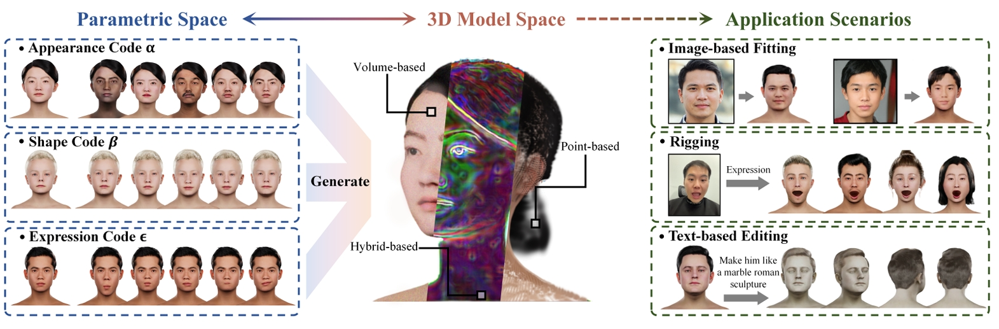

Yiyu Zhuang
Ph.D. Candidate
School of Electronic Science and Engineering, Nanjing University
👋 Hi there!
I'm a computer vision researcher focusing on neural rendering and 3D vision.
When I'm not diving into research, you might find me:
- 🧠 Brainstorming with collaborators and turning coffee into groundbreaking research
- 🎮 Exploring latest 3D/VR/AR tech, or enjoying MOBA/FPS games
- 🤖 Tinkering with small robotic projects
- 🎨 Enjoying photography, music (singing & guitar), and swimming
- 💭 Daydreaming on the couch...
Biography
I am a Ph.D. candidate at Nanjing University, working at the intersection of computer vision and computer graphics.
My research focuses on 3D reconstruction and generation, with particular emphasis on 3D avatar and 3D face modeling.
I have published multiple first-author papers in top-tier conferences.
Selected Publications
(* - equal contribution; # - corresponding author; ^ - project managers)
-
IDOL: Instant Photorealistic 3D Human Creation from a Single Image
ArXiv Preprint
-
Towards Native Generative Model for 3D Head Avatar
ArXiv Preprint
-
Head360: Learning a Parametric 3D Full-Head for Free-View Synthesis in 360°
ECCV 2024
-
NeAI: A Pre-convolved Representation for Plug-and-Play Neural Illumination Fields
AAAI 2024
-
Anti-Aliased Neural Implicit Surfaces with Encoding Level of Detail
SIGGRAPH Asia 2023
-
MoFaNeRF: Morphable Facial Neural Radiance Field
ECCV 2022
-
 High-Fidelity 3D Face Generation From Natural Language Descriptions
High-Fidelity 3D Face Generation From Natural Language DescriptionsCVPR 2023
-
High-Fidelity Hyperspectral Snapshot of Physical World: System Architecture, Dataset and Model
IEEE J-STSP 2022